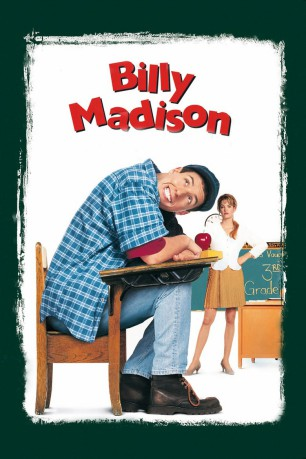

#9519 Billy Madison - Ein Chaot zum Verlieben
Alternativ: Billy Madison
 
 IMDB-Wertung: 6.4 / 10
IMDB-Wertung: 6.4 / 10  Metascore: 0
Metascore: 0 
Obwohl er einmal die Millionen des Madisons Hotel erben wird, hat sich Billy in letzter Zeit hauptsächlich mit Frauen und Alkohol befasst. Seit er die High School von zehn Jahren verlassen hat, ist für ihn das Leben eine einzige Party, auf der er unentwegt Daiquiris schlürft, sich am Swimming-Pool sonnt, verrückte Streiche spielt und allem hinterher jagt, was einen Rock trägt (oder nicht trägt!). Aber als Brian Madison seinem missratenen Sohn mitteilt, dass er sein Spitzenunternehmen an den Vizepräsidenten und Schnüffler Eric Gordon übertragen will, geht Billy die Wette seines Lebens ein. Er wird noch einmal zur Schule gehen und innerhalb eines halben Jahres die besten Noten erlangen. Und diesmal wird das Scheckbuch von Mr. Madison nicht für die Versetzung Billys bezahlen müssen. Kann der gutgläubige Trottel Billy sich zusammenreißen und den Respekt seines Vaters zusammen mit dem Familienvermögen und der Liebe seiner schönen Lehrerin Veronica gewinnen?
Jahr: 1995
Dauer: 89 Minuten
FSK: 6
Land: USA Studio: Universal PicturesTonspuren:
Untertitel: Deutsch, Englisch,
Auflösung: 1080p (1920x1040) Größe: 8468 MB
Genre: Komödie
Regisseur: Tamra Davis
Drehbuch: Tim Herlihy, Adam Sandler
Soundtrack: Randy Edelman
Darsteller:
 Adam Sandler als Billy Madison
Adam Sandler als Billy Madison Darren McGavin als Brian Madison
Darren McGavin als Brian Madison Bridgette Wilson-Sampras als Veronica Vaughn
Bridgette Wilson-Sampras als Veronica Vaughn Bradley Whitford als Eric Gordon
Bradley Whitford als Eric Gordon Josh Mostel als Principal Max Anderson
Josh Mostel als Principal Max Anderson Norm MacDonald als Frank
Norm MacDonald als Frank- Mark Beltzman als Jack
 Larry Hankin als Carl Alphonse
Larry Hankin als Carl Alphonse- Theresa Merritt als Juanita
- Hrant Alianak als Pete
- Christopher Kelk als Rollo the Janitor
 Marc Donato als Nodding 1st Grader
Marc Donato als Nodding 1st Grader- Helen Hughes als 2nd Grade Teacher
- Shane Farberman als Clown
 Marcia Bennett als 4th Grade Teacher
Marcia Bennett als 4th Grade Teacher Tim Herlihy als Architect
Tim Herlihy als Architect- Joyce Gordon als Lunch Lady
 Robert Smigel als Mr. Oblaski
Robert Smigel als Mr. Oblaski- Amos Crawley als Rod
- Matthew Ferguson als Tenth Grader
- James Downey als Principal
 Steve Buscemi als Danny McGrath (uncredited)
Steve Buscemi als Danny McGrath (uncredited)- Chris Farley als Bus Driver (uncredited)
- John Yost als Brian's Business Associates #1 (uncredited)
- Dina Platias als Miss Lippy
- Vincent Marino als Cook
- Jack Mather als Ted 'Old Man' Clemens
- Keith Cole als Penguin
- Chris Mei als Penguin
- Conor Devitt als O'Doyle (Grade 1)
- Jared Durand als Scotty Logan (Grade 1)
- Jessica Nakamura als Tricia Labonte (Grade 1)
- Jacelyn Holmes als 2nd Grader
- Claire Cellucci als Attractive Lady
- Al Maini als Chauffeur
- Jared Cook als Ernie (Grade 3)
- Christian Matheson als O'Doyle (Grade 3)
- Kyle Bailey als Kyle
- Vernon Chapman als Butler
- Mandy Watts als Maid
- Austin Pool als Dan (Grade 3)
- Gladys O'Connor als Tour Guide
- Diane Douglass als Nurse
- Frank Nakashima als Architect
- Jordan Lerner-Ellis als Pothead
- Daniel Lerner-Ellis als Pothead
- Melissa Korzenko als Nancy Connors
- Colin Smith als O'Doyle (Grade 9)
- Jeff Moser als Paul
- Tex Konig als Crazy Persons
Datei: X:\1995\Billy Madison - Ein Chaot zum Verlieben (1995, FSK6, 1920x1040).mkv seit 06.09.2018
Festplatte: HD 1992-1995
 Es gibt insgesamt 85 Filme in der Gruppe '1995'
Es gibt insgesamt 85 Filme in der Gruppe '1995'